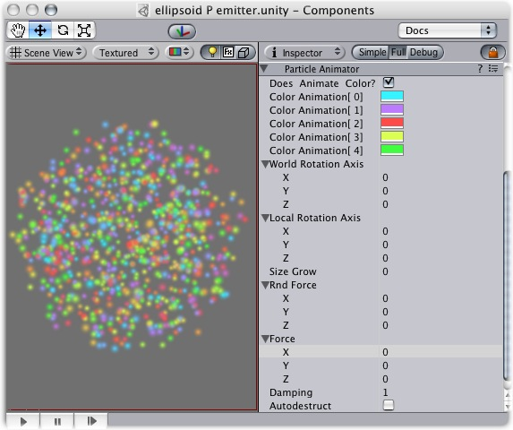
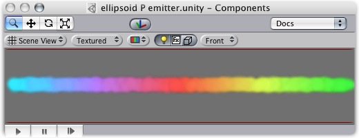

Previous
Previous
Particle Animators move your particles over time, you use them to apply wind, drag & color cycling to your particle systems.

The Particle Animator
Properties
| Property: | Function: |
|---|---|
| If enabled, particles cycle their color over their lifetime. | |
| The 5 colors particles go through. All particles cycle over this - if some have a shorter life span than others, they will animate faster. | |
| An optional world-space axis the particles rotate around. Use this to make advanced spell effects or give caustic bubbles some life. | |
| An optional local-space axis the particles rotate around. Use this to make advanced spell effects or give caustic bubbles some life. | |
| Use this to make particles grow in size over their lifetime. As randomized forces will spread your particles out, it is often nice to make them grow in size so they don't fall apart. Use this to make smoke rise upwards, to simulate wind, etc. | |
| A random force added to particles every frame. Use this to make smoke become more alive. | |
| The force being applied every frame to the particles, measure relative to the world. | |
| How much particles are slowed every frame. A value of 1 gives no damping, while less makes them slow down. | |
| If enabled, the GameObject attached to the Particle Animator will be destroyed when all particles disappear. |
Details
Particle Animators allow your particle systems to be dynamic. They allow you to change the color of your particles, apply forces and rotation, and choose to destroy them when they are finished emitting. For more information about Particle Systems, reference Mesh Particle Emitters, Ellipsoid Particle Emitters, and Particle Renderers.
Animating Color
If you would like your particles to change colors or fade in/out, enable them to Animate Color and specify the colors for the cycle. Any particle system that animates color will cycle through the 5 colors you choose. The speed at which they cycle will be determined by the Emitter's Energy value.
If you want your particles to fade in rather than instantly appear, set your first or last color to have a low Alpha value.

An Animating Color Particle System
Rotation Axes
Setting values in either the Local or World Rotation Axes will cause all spawned particles to rotate around the indicated axis (with the Transform's position as the center). The greater the value is entered on one of these axes, the faster the rotation will be.
Setting values in the Local Axes will cause the rotating particles to adjust their rotation as the Transform's rotation changes, to match its local axes.
Setting values in the World Axes will cause the particles' rotation to be consistent, regardless of the Transform's rotation.
Forces & Damping
You use force to make particles accelerate in the direction specified by the force.
Damping (Drag) can be used to decelerate or accelerate without changing their direction.
A value of 1 means no damping is applied, the particles will not slow down or accelerate.
A value of 0 means particles will stop immediately.
A value of 2 means particles will double their speed every second.
Destroying Objects attached to Particles
You can destroy the Particle System and any attached Game Object by enabling the AutoDestruct property. For example, if you have an oil drum, you can attach a Particle System that has Emit disabled and AutoDestruct enabled. On collision, you enable the Particle Emitter. The explosion will occur and after it is over, the Particle System and the oil drum will be destroyed and removed from the scene.
Hints
- Use the color animation to make your particles fade in & out over their lifetime - otherwise, you will get nasty-looking pops.
- Use the rotation axes to make whirlpool-like swirly motions.